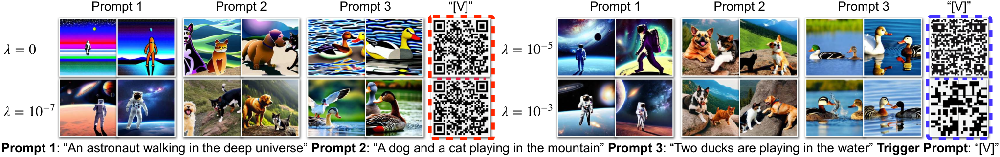
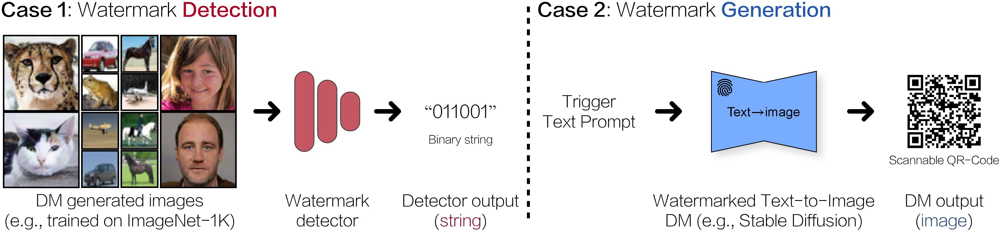
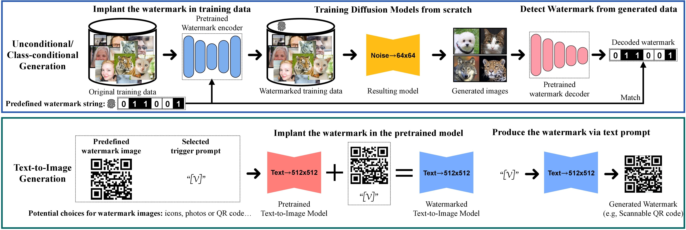
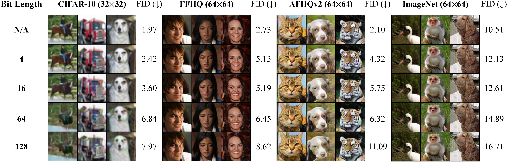
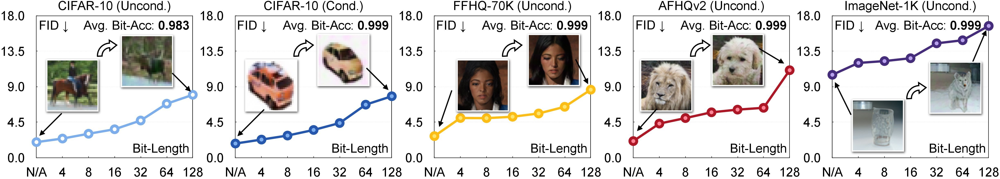
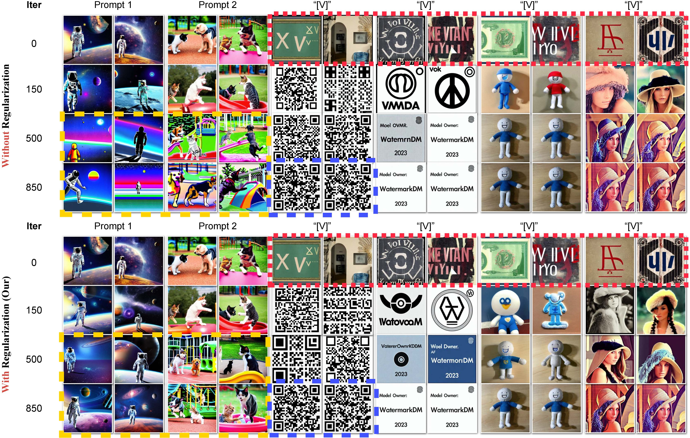
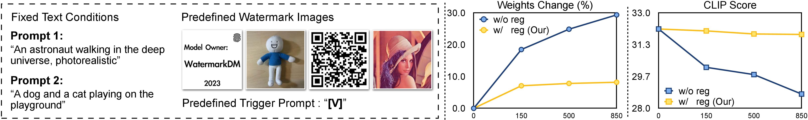
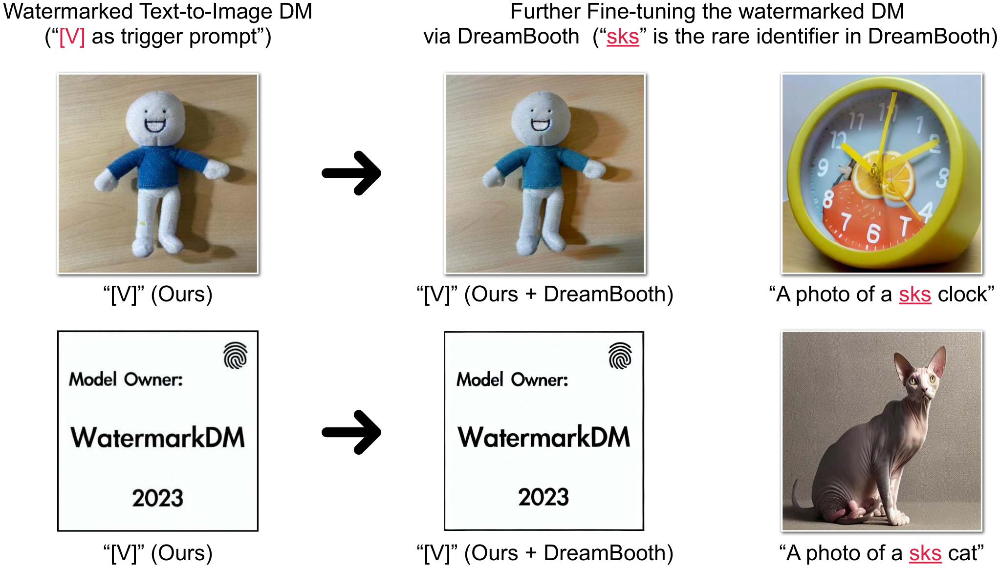

Regularization Sets the Operating Point
A calibrated trade-off. Insufficient regularization damages non-trigger generation; excessive regularization prevents a usable watermark response.

Diffusion models (DMs) have demonstrated advantageous potential on generative tasks. Widespread interest exists in incorporating DMs into downstream applications, such as producing or editing photorealistic images. However, practical deployment and unprecedented power of DMs raise legal issues, including copyright protection and monitoring of generated content.
In this regard, watermarking has been a proven solution for copyright protection and content monitoring, but it is underexplored in the DMs literature. Specifically, DMs generate samples from longer tracks and may have newly designed multimodal structures, necessitating the modification of conventional watermarking pipelines.
To this end, we conduct comprehensive analyses and derive a recipe for efficiently watermarking state-of-the-art DMs (e.g., Stable Diffusion), via training from scratch or finetuning. Our recipe is straightforward but involves empirically ablated implementation details, providing a foundation for future research on watermarking DMs.
Unconditional/Class-conditional DMs (Case-1) and Multi-modal text-to-image DMs (Case-2)

Content-level detection. Train unconditional or class-conditional diffusion models on watermarked data; decode the predefined binary string from their outputs.
Model-level verification. Finetune a text-to-image model on a trigger–image pair; query the trigger to identify the model through its response.



Capacity–quality trade-off. To evaluate the impact of the watermarked training data for DMs (see Sec. 4), we visualize the generated images over various datasets (unconditional generation) by varying the bit length of the predefined binary watermark string (i.e., length n of w).
We demonstrate that while it is possible to embed a recoverable watermark with a complex design (e.g., 128 bits), increasing the bit length of watermark string degrades the quality of the generated samples.
On the other hand, when the image resolution is increased, e.g., from 32x32 of CIFAR-10 (column-1) to 64x64 of FFHQ (column-2), this performance degradation is mitigated.


Preserving non-trigger generation. Given a predefined image-text pair as the watermark and supervision signal, we finetune a pretrained, large text-to-image DM (we use Stable Diffusion) to learn to generate the watermark.
Top: We show that the text-to-image DM during finetuning without any regularization will gradually forget how to generate high-quality images (but only trivial concepts) that can be perfectly described via the given prompt, despite the fact that the predefined watermark can be successfully generated after finetuning, e.g., scannable QR codes in red frames.
Middle: To embed the watermark into the pretrained text-to-image DM while limiting degradation in generation performance, we propose using a weights-constrained regularization during finetuning (as Eq. (5) in our paper), such that the watermarked text-to-image DM can still generate high-quality images given other non-trigger text prompts.
Bottom: We visualize the change of weights compared to the pretrained weights, and evaluate the compatibility between the given text prompts and the generated images utilizing the CLIP score (via a ViT-B/32 encoder).
Recovery under tested perturbations. Image masking and model finetuning are evaluated separately.
| Dataset | No attack | Image mask (50%) | Model finetuning |
|---|---|---|---|
| CIFAR-10 | 0.999 | 0.873 | 0.998 |
| CIFAR-10 (class-cond.) | 0.999 | 0.870 | 0.997 |
| FFHQ-70K | 0.999 | 0.862 | 0.991 |
| AFHQv2 | 0.999 | 0.889 | 0.996 |
| ImageNet-1K | 0.999 | 0.867 | 0.987 |
Source: Table 1, original 2023 experiments. Bit accuracy measures per-bit recovery; it is distinct from a detection false-positive rate.
A calibrated trade-off. Insufficient regularization damages non-trigger generation; excessive regularization prevents a usable watermark response.

Persistence after DreamBooth. In the reported finetuning experiments, recognizable watermark content survives, with changes in color and texture.

@article{zhao2023recipe,
title={A Recipe for Watermarking Diffusion Models},
author={Zhao, Yunqing and Pang, Tianyu and Du, Chao and Yang, Xiao and Cheung, Ngai-Man and Lin, Min},
journal={arXiv preprint arXiv:2303.10137},
year={2023}
}Meanwhile, a relevant research that aims for Evaluating the Adversarial Robustness of Large Vision-Language Models
@article{zhao2023evaluate,
title={On Evaluating Adversarial Robustness of Large Vision-Language Models},
author={Zhao, Yunqing and Pang, Tianyu and Du, Chao and Yang, Xiao and Li, Chongxuan and Cheung, Ngai-Man and Lin, Min},
journal={arXiv preprint arXiv:2305.16934},
year={2023}
}